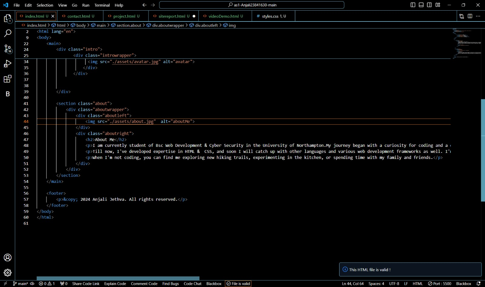
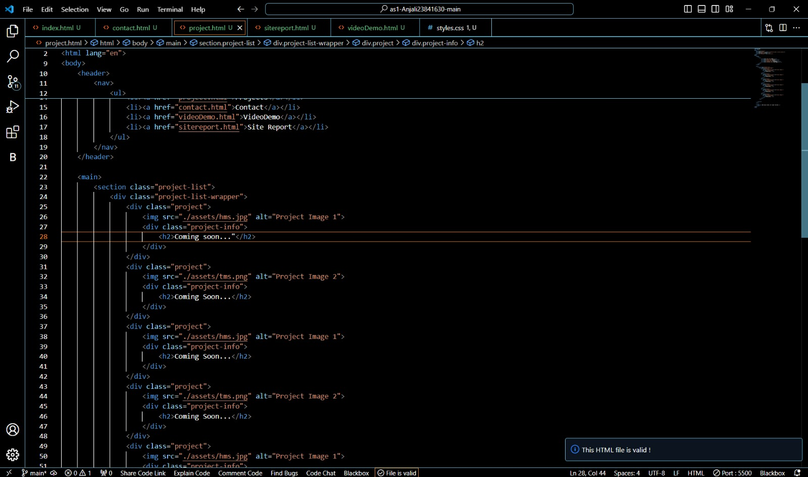
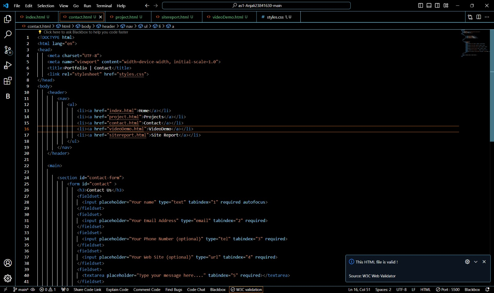

My Portfolio Website Development Journey
Embarking on the path of web development and design was both exhilarating and daunting. I approached it with eagerness to learn but also a bit of nervousness. As I delved into the basics of coding, design principles, and the debugging process, I encountered a mix of challenges and victories.
At the outset, understanding HTML and CSS felt like deciphering a new language. I stumbled through tags and selectors, struggling to make sense of it all. But with persistence and practice, I started to grasp the concepts and gained confidence in building structured web pages and styling them.
Coding wasn't always smooth sailing. There were frustrating moments when my code didn't behave as expected, leading to hours of debugging and troubleshooting. However, each issue I resolved taught me valuable lessons and propelled me forward.
Throughout the module, I engaged in reflective discussions about my learning journey. These sessions helped me understand my progress, identify areas for improvement, and make creative decisions about my website's development.
As I worked on my personal portfolio website, I focused on refining its technical and design aspects. I carefully selected fonts and colors that reflected my style and professionalism. Drawing inspiration from minimalist websites, I aimed for clean layouts and user-friendly navigation.
Validation Reports
To ensure quality, I regularly validated my HTML and CSS code, fixing any errors to maintain standards compliance. Screenshots of validation reports serve as evidence of my commitment to producing clean and well-structured code.
Here are the screenshots of the validation report of my HTML & CSS code:
  